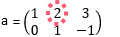

| AUX> [1 2; 3 4]+[.1 .2; .3 .4] |
| ans = 1.1 2.2 3.3 4.4 |

| AUX> (1:6).matrix(2)+[1 6; 10 10] |
| ans = 2 8 3 14 15 6 |

| AUX> (1:12).matrix(3)+[10 -6 0]' |
| ans = 11 12 13 14 -1 0 1 2 9 10 11 12 |
Matrix indexing
- Indexing a matrix takes two values, row and column indices with a comma separator. The colon operator can be used to represent consecutive numbers or a vector, in general, can be used an index of a vector or matrix. For example, after a matrix a is defined, its values can be modified 
- If a matrix is indexed with only one value, it is serialized indexing. Always remember that in AUXLAB the data is managed and stored row-wise. Therefore, if x is an (m×n) matrix, the serialized index of the i-th row, j-th column element is (i-1)*m+j. Continuing with the example above,

the order of elements according to serialized indexing is 1 8 3 0 1 -1. In other words, A(5) is equivalent to A(2,2). - The indexing keyword end refers to the row count or the column count, depending on where it is used. If it is used as a serialized index, it represents the total number of elements. In the current example,
- The replacement of elements of a matrix by indexing follows the same principle as in the vector indexing. The only requirement is that both hand sides have the same row count. Same as in the case of vectors, if the RHS is a scalar, the RHS value is applied to the entire matrix; and if the RHS is a column vector, the RHS value on each row is applied to the entire row in the matrix.
- If the elements to replace are not represented by simple row or column indexing, serialized indexing (i.e., just one index) can be used. For example, to replace the 1st row, 2nd col and the 2nd row and 1st col elements with random numbers:
- With compound operators and conditioning indexing, complex and verbose operations can be neatly described. For example, I want to generate a 10 by 10 matrix of random numbers between 0 and 1, then try to make the values on the even-numbered rows between 0 and 10 (multiply by 10), at the same time turn the values on the columns of prime number indices negative.
| AUX> a(1,2) = 8; |
| AUX> a |
| a = 1 8 3 0 1 -1 |
| a(end,1) // end means 2 |
| a(1,end) // end means 3 |
| a(end) // end means 6 |
| AUX> a(1,end) = [7 6] // Invalid! LHS is 2x1, RHS is 1x2 |
| AUX> a(1,end) = [7 6]' // There you go! |
| AUX> a([2 4]) = rand(2) // rand(2) generates a 2-element vector of random numbers |
| AUX> a |
| a = 1 0.2736 3 0.8461 1 -1 |
Compound-Assignment Operators, Conditional Indexing
| AUX> x=rand(100).matrix(10); |
| AUX> x((1:end)%2==0,:) *= 10; |
| AUX> x(:,[2 5 7]) *= -1; |
| AUX> x*=100; x=x.round; x/=100 // to round up to third decimal place |
| x = 0.64 -0.19 0.74 0.52 -0.27 0.99 -0.73 0.81 0.18 0.43 6.12 -6.37 2.44 8.33 -9.64 0.06 -6.92 3.40 3.68 6.08 0.67 -0.28 0.93 0.32 -0.42 0.91 -0.71 0.12 0.16 0.66 5.20 -7.36 6.93 6.13 -1.59 0.66 -8.19 3.02 6.46 6.90 0.46 -0.53 0.40 0.38 -0.70 0.33 -0.97 0.05 0.58 0.74 3.26 -0.60 8.62 5.71 -2.10 1.70 -6.37 7.59 6.47 2.60 0.97 -0.55 0.06 0.00 -0.41 0.10 -0.14 0.53 0.62 0.66 8.17 -4.74 9.86 0.32 -5.65 2.08 -2.76 4.14 4.76 8.64 0.47 -0.34 0.09 0.84 -0.71 0.82 -0.63 0.37 0.34 0.36 5.27 -8.92 2.78 9.77 -8.98 8.00 -4.34 9.95 9.76 3.81 |